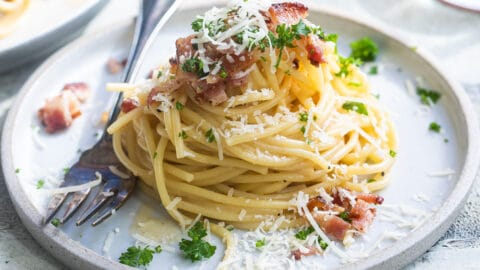

Spaghetti Carbonara

Description
Spaghetti Carbonara is a classic Roman dish made with eggs, Pecorino Romano, guanciale, and black pepper. The creamy sauce is not made with cream, but rather with eggs and cheese, offering a delightful taste sensation.
Ingredients
- 400g of spaghetti
- 100g of guanciale or pancetta, diced
- 3 large eggs
- 1 cup of grated Pecorino Romano cheese
- 1 clove of garlic
- Salt and black pepper to taste
- A pinch of parsley, chopped (optional)
Steps
- Bring a large pot of salted water to a boil and cook the spaghetti until al dente.
- In a skillet, cook the guanciale or pancetta over medium heat until it becomes crispy. Add garlic for flavor.
- In a bowl, whisk together the eggs, Pecorino Romano, and some black pepper until well combined.
- Drain the spaghetti, reserving about a cup of pasta water. Add the pasta to the skillet with guanciale/pancetta.
- Remove skillet from heat, and quickly pour in the egg mixture, combining quickly to create a creamy sauce. Add reserved pasta water if needed.
- Season with salt, more black pepper, and parsley. Serve immediately with extra Pecorino on the side.